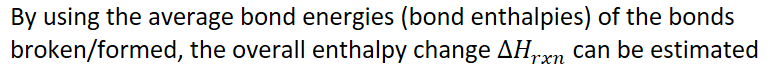
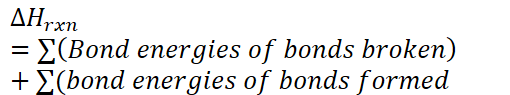
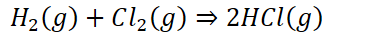
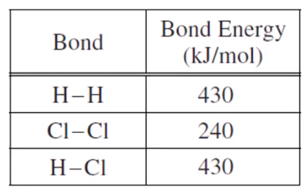

Atoms in a bond are more stable together than they are apart
Energy is required to break bonds (endothermic)
Bond energy: the energy stored in a bond
If negative, it represents the energy released when the bond forms
If positive, it represents the required energy to break the bond
Example
The bond energy of H-H bond is 436kJ/mol
It takes 436kJ to break 1 mol of H-H bonds, and
436kJ is released when 1 mole of H-H bonds are formed
Bond energy increases as bond order (single, double, triple bond) increases
Why are bond energies useful?
{width="8.0625in" height="0.6875in"}
{width="5.3125in" height="0.9895833333333334in"}
For bonds broken, value will be positive
For bonds formed, value will be negative
{width="3.9895833333333335in" height="0.3541666666666667in"}
{width="3.9270833333333335in" height="0.3333333333333333in"}
Using:
{width="3.0416666666666665in" height="1.8958333333333333in"}